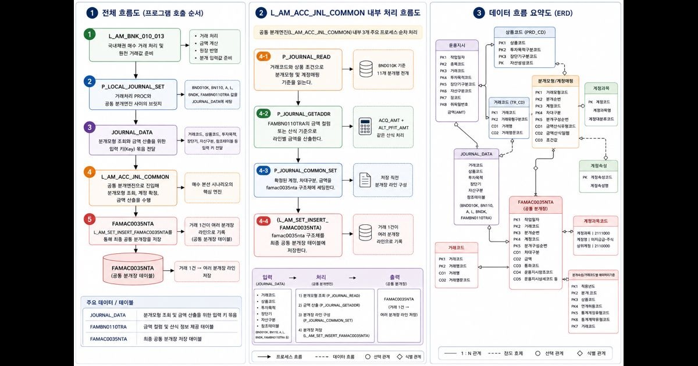

Table Structure
2. 분개장 생성 관련 테이블 구조
분개장은 원천 거래값만으로 만들어지지 않는다. 원천 거래, 거래/상품 기준정보, 분개모형, 계정매핑이 결합되어
최종 분개장 라인으로 저장된다.
| 영역 | 주요 테이블/정보 | 역할 | 교육 포인트 |
|---|---|---|---|
| 원천 거래 | 거래 원장/매매 원장 | 거래일자, 상품, 금액, 이자, 세금 등 원천값 제공 | 분개 금액의 출처다. |
| 거래 기준 | 거래코드/거래유형 관리 | 어떤 분개모형을 사용할지 결정 | 거래코드는 차대 구조를 선택한다. |
| 상품 기준 | 상품코드, 투자목적, 장단기, 자산구분 | 계정상품과 실제 계정 결정 조건 제공 | 상품코드는 계정 축을 만든다. |
| 분개모형 | 분개정의, 차대구분, 계정속성, 금액 컬럼/산식 | 분개장에 몇 줄이 생기고 각 줄이 어떤 의미인지 정의 | 분개모형은 분개장의 설계도다. |
| 계정매핑 | 상품계정, 계정속성, 계정과목 매핑 | 계정속성을 실제 계정코드로 치환 | 계정매핑은 추상 계정속성을 실제 계정으로 번역한다. |
| 분개장 | 공통 분개장 | 확정된 계정, 차대구분, 금액, 거래 식별값 저장 | 원장과 대사의 출발점이다. |
Model Processing
3. 분개모형을 이용한 처리구조
거래코드 축
거래유형은 어떤 분개모형을 읽을지 결정한다. 즉 “몇 줄의 차변/대변을 만들 것인가”를 정한다.
거래 발생→거래코드→분개모형→차대구조
상품코드 축
상품 조건은 계정속성이 실제 어떤 계정으로 바뀔지 결정한다. 즉 “어떤 계정으로 저장할 것인가”를 정한다.
상품→투자목적→장단기→실제계정
1. 거래 입력거래유형, 상품, 투자목적, 장단기, 원천 금액을 수신한다.
2. 분개모형 조회거래코드 기준으로 차변/대변 라인과 계정속성을 가져온다.
3. 계정 확정상품 조건과 계정속성으로 실제 계정을 찾는다.
4. 금액 산출원천 컬럼 또는 산식으로 라인별 금액을 채운다.
5. 차대 검증차변 합계와 대변 합계를 비교한다.
6. 분개장 저장검증된 분개 라인을 공통 분개장에 저장한다.
7. 원장 대사계정원장과 보조원장 기준으로 정합성을 확인한다.
8. 마감 반영일일 마감과 결산 보고의 근거로 사용한다.
Code Master
4. 주요 코드 관리정보
| 코드/관리정보 | 분개 처리에서의 의미 | 확인해야 할 점 |
|---|---|---|
| 거래코드 | 분개모형 선택 키 | 의도한 거래유형과 분개모형이 연결되는지 확인 |
| 상품코드 | 상품계정 매핑의 기준 | 상품의 회계 분류와 계정상품 연결이 맞는지 확인 |
| 투자목적 | 계정 분류 세분화 조건 | 매도가능, 만기보유 등 회계 목적에 맞는 계정으로 가는지 확인 |
| 장단기 구분 | 장기/단기 계정 분기 조건 | 계정상품 또는 실제 계정 결정에 반영되는지 확인 |
| 자산구분 | 자산군 식별 조건 | 채권, 주식, 외화 등 자산군별 분개 경로가 섞이지 않는지 확인 |
| 계정속성 | 분개모형과 실제 계정 사이의 중간 코드 | 계정속성이 실제 계정으로 치환 가능한지 확인 |
| 참조 원장/테이블 | 금액 컬럼의 출처 | 분개모형의 금액 컬럼이 실제 원천값과 의미가 맞는지 확인 |
운영 관점
분개 오류는 대개 거래코드, 상품코드, 계정속성, 금액 원천 중 하나가 어긋날 때 발생한다. 코드 관리정보는 분개모형보다 먼저 확인해야 하는 기초 조건이다.
Model Management Screen
5. 분개모형 관리화면 주요항목 및 관리방법
분개모형 관리화면은 “거래가 발생했을 때 어떤 차변/대변 라인을 만들고, 어떤 계정속성과 금액 기준을 적용할 것인가”를 관리하는 화면이다.
화면에서 저장한 값은 특정 거래 한 건이 아니라 같은 조건의 모든 거래에 영향을 줄 수 있으므로, 변경 전후 검증이 반드시 필요하다.
관리화면 주요 항목
| 항목 | 의미 | 관리 방법 | 오류 시 영향 |
|---|---|---|---|
| 거래코드 | 어떤 거래유형의 분개모형인지 식별 | 거래처리 프로그램에서 넘어오는 거래코드와 일치해야 한다. | 분개모형 미조회 또는 엉뚱한 모형 호출 |
| 적용시작일/종료일 | 분개모형이 유효한 기간 | 신규 기준은 시작일을 명확히 두고, 기존 기준은 종료일로 닫는다. | 과거/미래 거래에 잘못된 모형 적용 |
| 분개순번 | 한 거래에서 생성되는 분개 라인의 순서 | 차변/대변 라인이 누락·중복되지 않도록 순번을 관리한다. | 분개 라인 누락, 중복, 금액 매칭 오류 |
| 차대구분 | 차변 또는 대변 방향 | 회계 의미에 맞는 방향인지 검토하고 차대 합계를 검증한다. | 차대 불일치 또는 계정 방향 반대 처리 |
| 계정속성 | 실제 계정 전 단계의 회계 성격 | 상품계정 매핑에서 실제 계정으로 치환 가능한 값만 사용한다. | 계정 미확정, 계정원장 반영 실패 |
| 참조 원장/테이블 | 금액을 읽을 원천 데이터 위치 | 거래처리 PROC가 실제로 생성·갱신하는 원천과 맞춰야 한다. | 금액 0, Null, 다른 거래값 참조 |
| 금액 컬럼 | 분개 라인에 들어갈 금액의 원천 컬럼 | 컬럼 의미가 분개 의미와 맞는지 업무 담당자와 확인한다. | 취득가/이자/세금 등 금액 의미 혼동 |
| 연산자/보조 컬럼 | 두 금액을 더하거나 빼는 산식 | +/- 등 연산 방향을 샘플 금액으로 검증한다. | 금액 과대/과소, 차대 불일치 |
| 사용여부/상태 | 현재 모형의 적용 가능 상태 | 미사용 처리만으로 끝내지 말고 대체 모형 존재 여부를 확인한다. | 분개 대상 거래가 분개되지 않음 |
관리 절차
1. 변경 사유 확인신규 거래, 계정 변경, 금액 산식 변경, 오류 보정 중 무엇인지 분류한다.
2. 영향 거래 식별거래코드, 상품, 투자목적, 장단기 조건으로 영향 범위를 찾는다.
3. 모형 행 설계차대구분, 계정속성, 금액 원천, 산식, 순번을 표로 먼저 정리한다.
4. 계정매핑 확인계정속성이 실제 계정으로 치환되는지 상품계정 기준을 확인한다.
5. 샘플 거래 검증대표 거래 1건으로 분개 라인, 금액, 차대 합계를 검증한다.
6. 저장 결과 확인분개장, 계정원장, 보조원장까지 저장 결과를 대사한다.
7. 적용일 관리기존 모형 종료일과 신규 모형 시작일이 겹치거나 비지 않게 관리한다.
8. 변경 이력 기록변경 사유, 승인자, 테스트 거래, 검증 결과를 남긴다.
운영 체크리스트
| 점검 질문 | 확인 방법 | 통과 기준 |
|---|---|---|
| 거래처리 PROC가 넘기는 거래코드와 모형의 거래코드가 같은가? | 대표 거래 호출값과 관리화면 거래코드 비교 | 동일 거래코드로 모형 조회 가능 |
| 상품 조건별 실제 계정이 확정되는가? | 상품코드 + 투자목적 + 장단기 + 계정속성 매핑 확인 | 모든 계정속성이 실제 계정으로 치환 |
| 금액 컬럼의 업무 의미가 분개 의미와 맞는가? | 원천 거래 상세와 분개 라인 금액 비교 | 취득가, 지급액, 이자, 세금 항목이 의도대로 반영 |
| 차변/대변 합계가 일치하는가? | 샘플 거래 생성 후 차대 합계 비교 | 차변 합계 = 대변 합계 |
| 적용일이 기존 모형과 충돌하지 않는가? | 동일 거래코드의 적용기간 중복/공백 확인 | 중복 없이 하나의 유효 모형만 조회 |
| 변경 후 후속 원장 대사가 맞는가? | 분개장, 계정원장, 보조원장 결과 비교 | 분개 결과와 원장 결과 정합 |
핵심 원칙
분개모형 관리화면에서 가장 위험한 값은 차대구분, 계정속성, 금액 컬럼, 적용일이다. 이 네 가지는 저장 전 반드시 샘플 거래로 검증해야 한다.
PROC Call Structure
6. 회계처리 시 PROC 프로그램 호출구조
거래처리 PROC거래를 검증하고 원천 거래값과 금액을 준비한다.
분개 입력 세팅거래코드, 상품, 투자목적, 장단기, 참조 원장을 입력 구조에 담는다.
공통 분개엔진분개모형 조회, 계정 확정, 금액 산출을 수행한다.
분개모형 조회차대구분, 계정속성, 금액 원천, 산식을 읽는다.
금액 산출원천 거래의 컬럼 또는 사전 계산값으로 금액을 채운다.
차대 검증차변 합계와 대변 합계를 비교한다.
분개장 구조 세팅저장용 분개장 라인을 구성한다.
분개장 저장최종 공통 분개장에 저장한다.

내부 상세
실제 함수명 기준 흐름은 LV4 마스터 자료에 별도 정리되어 있다. 매수 본선은 일반 공통분개 경로이며, 이자/평가 집합분개 경로와 분리해서 설명한다.
Sample Visualization
7. 샘플을 이용한 시각화 자료
입력 키
거래채권 매수
상품국내채권 상품
목적매도가능
기간장기
원천채권 매수 거래원장
분개모형 전개
차변취득가, 기경과이자
대변미지급액, 지급액, 지급액 대체
대변선수이자, 예수원천세
분개장 결과
계정상품 조건 + 계정속성으로 확정
금액원천 컬럼과 산식으로 세팅
검증차대 일치 후 저장
교육할 때는 “거래코드는 분개모형을 고르고, 상품코드는 계정을 고른다. 두 축이 결합되어 여러 개의 분개장 라인이 만들어진다”는 문장으로 정리하면 된다.